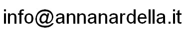

| Name:Nome: | Anna Nardella |
|---|---|
| Place of birth:Luogo di nascita: | Bolivia |
| Nationality:Nazionalità: | ItalianItaliana |
| Place of residence:Residente a: | Milan - ItalyMilano - Italia |
| Contact:Contatto: | www.annanardella.it
 |
| 1984-1988: | Heriot-Watt University - Edinburgh, Scotland (GB)Edinburgo, Scozia (GB) Degree in Electrical and Electronic Engineering - B.Eng Honours Laurea in Ingegneria Elettronica - B.Eng Honours (bachelor of engineering, quadriennale) |
|---|---|
| 1982-1984: | American School of Paris - Paris (FR)Parigi (FR)
International Baccalaureate Diploma: French-English Diploma di Maturità Internazionale: Francese-Inglese |
| 1976-1982: | Singapore American School - Singapore (SG) |
| English:Inglese: | native speakermadrelingua |
|---|---|
| Italian:Italiano: | fluent (C2)ottimo (C2) |
| French and Spanish:Francese e Spagnolo | good (B2)buono (B2) |
| February 2014 to date:Febbraio 2014 a oggi: | Siemens Building Tecnologies - Milan (IT) Technical Writer and Technical Editor Redattore Tecnico e Technical Editor Writing and editing of product documentation for the new Desigo CC Integrated Building Management Platform using a collaborative DITA-based single-source content management system (Schema ST4) to publish in a variety of formats (pdf, chm, html, etc). The product software is developed across various global locations using an Agile methodology, and the technical writers follow the scrum teams sprint by sprint. Producing and editing the manuals and online help requires collaboration between the writers of the different locations (the US, India, Switzerland, and Italy). Redazione e editing di documentazione tecnica per la nuova piattaforma Desigo CC per la gestione integrata degli edifici utilizzando un sistema collaborativo 'single source' basato su DITA (Schema ST4) per la pubblicazione multi-formato (pdf, chm, html, ecc). Il software è sviluppato da diverse divisioni seguendo la metodologia Agile, e i redattori documentano le attività dello scrum ad ogni sprint. La produzione e l'editing dei manuali e dell'online help richiedono collaborazione fra i redattori tecnici di ciascuna divisione (Stati Uniti, India, Svizzera, e Italia). |
|---|---|
| August 2012 to June 2016:Agosto 2012 a Giugno 2016: | Form and Content Media - London (UK) Technical Editor (freelance) Technical Editor (freelance) Editing of technical articles (in LaTeX format) for publication in the following journals: SPIE Newsroom (International Society for Optics and Photonics), SPE Plastics Research Online (Society of Plastics Engineers), and Awareness Magazine (self-awareness in autonomic systems). Editing di articoli tecnici (in formato LaTeX) per le seguenti pubblicazioni: SPIE Newsroom (International Society for Optics and Photonics), SPE Plastics Research Online (Society of Plastics Engineers), and Awareness Magazine (self-awareness in autonomic systems). |
| September 1995 to July 2012:Settembre 1995 a Luglio 2012: | Self-employed
Libero professionista Technical-Scientific Translator, Academic Editor Traduttore Tecnico-Scientifico, Revisore Testi Accademici
ACADEMIC:
ACCADEMICO:
TECHNICAL TRANSLATIONS:TRADUZIONI TECNICHE: |
| September 1992 - July 1995: Settembre 1992 - Luglio 1995: | Logika Comp S.p.A. - Cinisello Balsamo (MI) Pre-Sales & Applications Engineer Firmware developer (C language) Sviluppatore firmware (linguaggio C)
Embedded software development (in C language) for the control of plastic card personalisation equipment (embossing and magnetic stripe encoding). Using the object-oriented C++ language, I also developed PC applications for testing our machines. |
| October 1990 - September 1992: Ottobre 1990 - Settembre 1992: | Self-employed - Milan
Libero professionista - Milano English language teacher Insegnante di inglese Freelance technical translator, and English language teacher both with private schools and for clients such as Bocconi university. Traduttore tecnico freelance, e insegnante di inglese sia in scuole private che presso clienti quali l'Università Bocconi. |
| April 1990 - September 1990: Aprile 1990 - Settembre 1990: | Dating S.p.A. (Olivetti Group)- MilanMilano Firmware developer (assembler) Sviluppatore firmware (assembler) Firmware design of magnetic card terminals employed in access control and time and attendance systems. Progettazione firmware di terminali a tessera magnetica utilizzati in sistemi di controllo accessi e controllo presenze. |
| October 1988 - April 1990: Ottobre 1988 - Aprile 1990: | Schlumberger Industries - Barlassina (MB) Electronic design engineer Progettista elettronico
Hardware and firmware development of microprocessor equipment for energy measurement applications. In particular, I worked on the modem boards used on remote meter reading and control systems, and developed a new electronic PTZ corrector for gas metering. |
| Writing:Redazione: | Product and software documentation: Topic-based authoring of manuals and online help using single-sourcing and DITA (Darwin Information Typing Architecture) tools. Content strategy and focus on user assistance with 'every page is page one' approach. Use of graphic editing and diagramming software. Marketing material: White papers, case studies, product information notes, and brochures for process industry.Documentazione software e di prodotto: Strategia modulare per la produzione di manuali e online help con strumenti single-source e DITA (Darwin Information Typing Architecture). Approccio di tipo 'every page is page one', focalizzato sulle necessità dell'utente. Utilizzo di programmi di grafica e creazione diagrammi. Materiali marketing: White paper, case study, product information notes, e brochure per industrie di processo. |
|---|---|
| Editing:Editing: | Scientific and technical editing (for content, structure and style) to effectively communicate complex material to the intended audience. Publications include academic journals, and specialized industry websites and magazines. Use of LaTex for article layouts.Editing tecnico e scientifico (di contenuti, struttura, e stile) per comunicare efficacemente materiale complesso in funzione del tipo di pubblicazione (riviste scientifiche, siti web specialistici di settore, ecc.) Utilizzo di LaTex per il layout di articoli. |
| Translation:Traduzione: | Italian to English translations using CAT (computer-assisted translation) tools, and management of translation memories, terminology and glossaries. Traduzioni dall'Italiano all'Inglese con CAT (computer-assisted translation) tools e gestione di memorie di traduzione, terminologia e glossari. |
| Programming:Programmazione: | From work experience - assembler (8-bit microcontrollers), C, C++. From personal projects - java, css/xhtml markup.Da esperienze lavorative - assembler (microcontrollori 8 bit), C, C++. Da progetti personali - java, css/xhtml markup. |